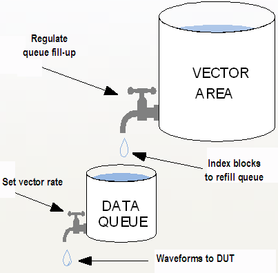

Operation mode of the data queue
The purpose of the data queues is supply a continuous stream of vectors (more precisely, vector instances) to the DUT when the sequencers are busy decoding sequencer instructions. Of course, the number of vectors in the queues decreases in such a situation. But the sequencers can refill it after they have finished with instruction processing because they write to the queues faster than cycles are forwarded to the DUT at maximal execution speed. When the queues are full, the sequencers stop writing until the queues need to be filled again.
The operating principle of the data queue can be thought of as follows:
Imagine a small container fitted with a small tap. The container represents the data queue. The tap regulates the cycle rate to the DUT. When you execute a test, a waveform is applied to the DUT, which empties the small container. However, the container is refilled most of the time at a higher rate via a big tap from a big container, which represents the vector area. The big tap regulates the fill-up rate of the data queue.

Functional changes
- Introduced before SmarTest 6.3.2